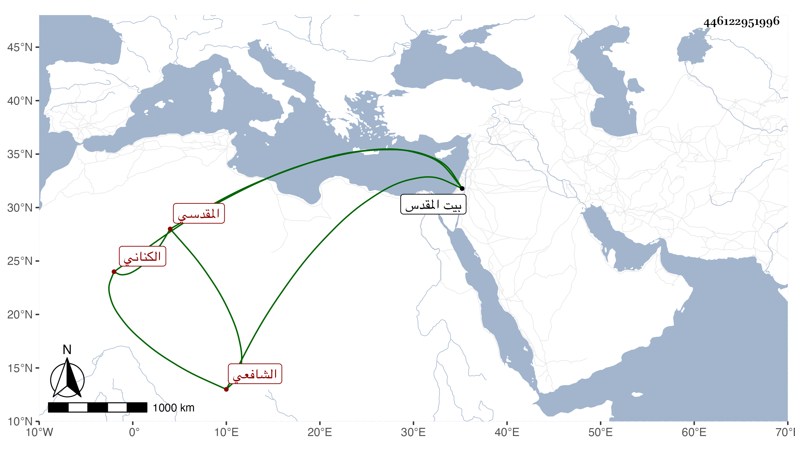

0902Sakhawi.DawLamic.ITO20230111-ara1.EIS1600.446122951996
Biography ID: 446122951996
إبراهيم بن عبد الله بن محمد بن عبد الرحمن بن سعد الدين بن جماعة البرهان ابن شيخنا الجمال الكناني المقدسي الشافعي سبط الشمس بن الديري الحنفي ووالد العماد إسماعيل والنجم محمد شيخ الصلاحية والخطيب المحب أحمد الآتي ذكرهم . ولد في إحدى الجمادين سنة خمس وثمانمائة ببيت المقدس ونشأ بها فحفظ القرآن وسمع على جده لأمه في صحيح مسلم وعلى غيره واشتغل يسيرا وولي قضاء بلده وخطابتها وتكلموا في سيرته وديانته وأورد له شيخنا في سنة أربع وأربعين من أنبائه حادثة . مات في آخر صفر سنة اثنتين وسبعين بعد أن استجيز ببعض الاستدعاآت .
